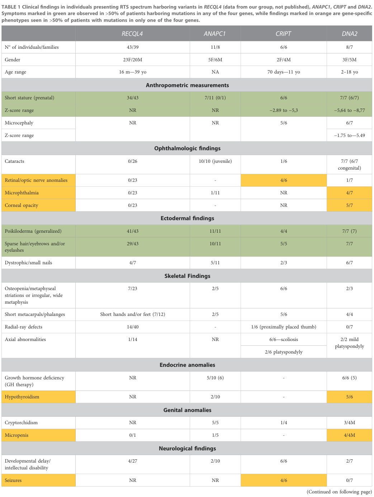

Rothmund-Thomson syndrome (RTS) is a rare autosomal recessive genodermatosis characterized by a rash that progresses to poikiloderma; sparse hair, eyelashes, and eyebrows; small stature; skeletal and dental abnormalities; juvenile cataracts; and an increased risk for cancer, especially osteosarcoma. Two molecularly defined types are recognized: type 1, associated with juvenile cataracts and caused by biallelic ANAPC1 mutations affecting the anaphase-promoting complex, and type 2, defined by biallelic RECQL4 mutations, which is characterized by skeletal anomalies and a high risk of osteosarcoma. RECQL4 encodes a RecQ DNA helicase, and its deficiency causes genomic instability through impaired DNA replication and repair.
Ask a research question about Rothmund-Thomson Syndrome. OpenScientist will conduct autonomous deep research using the Disorder Mechanisms Knowledge Base and PubMed literature (typically 10-30 minutes).
Do not include personal health information in your question. Questions and results are cached in your browser's local storage.
name: Rothmund-Thomson Syndrome
creation_date: "2026-06-17T00:00:00Z"
category: Mendelian
description: >-
Rothmund-Thomson syndrome (RTS) is a rare autosomal recessive genodermatosis
characterized by a rash that progresses to poikiloderma; sparse hair,
eyelashes, and eyebrows; small stature; skeletal and dental abnormalities;
juvenile cataracts; and an increased risk for cancer, especially osteosarcoma.
Two molecularly defined types are recognized: type 1, associated with juvenile
cataracts and caused by biallelic ANAPC1 mutations affecting the
anaphase-promoting complex, and type 2, defined by biallelic RECQL4 mutations,
which is characterized by skeletal anomalies and a high risk of osteosarcoma.
RECQL4 encodes a RecQ DNA helicase, and its deficiency causes genomic
instability through impaired DNA replication and repair.
parents:
- Dermatological Disease
- Genetic Disease
disease_term:
preferred_term: Rothmund-Thomson syndrome
term:
id: MONDO:0010002
label: Rothmund-Thomson syndrome
mappings:
mondo_mappings:
- term:
id: MONDO:0010002
label: Rothmund-Thomson syndrome
mapping_predicate: skos:exactMatch
mapping_source: MONDO
mapping_justification: Primary MONDO disease identifier for this Rothmund-Thomson syndrome entry.
external_assertions:
- name: OMIM RTS Type 1 (ANAPC1)
source: OMIM
assertion_type: disease_record
external_id: OMIM:618625
description: OMIM phenotype entry for Rothmund-Thomson syndrome type 1 (ANAPC1-related), associated with juvenile cataracts.
- name: OMIM RTS Type 2 (RECQL4)
source: OMIM
assertion_type: disease_record
external_id: OMIM:268400
description: OMIM phenotype entry for Rothmund-Thomson syndrome type 2 (RECQL4-related), characterized by skeletal anomalies and osteosarcoma risk.
classifications:
harrisons_chapter:
- classification_value: DERMATOLOGY
evidence:
- reference: PMID:11471165
reference_title: "Clinical manifestations in a cohort of 41 Rothmund-Thomson syndrome patients."
supports: SUPPORT
evidence_source: HUMAN_CLINICAL
snippet: "Rothmund-Thomson syndrome (RTS) is a rare autosomal recessive genodermatosis characterized by a poikilodermatous rash starting in infancy"
explanation: RTS is described as a genodermatosis with a defining poikilodermatous skin phenotype, supporting dermatology classification.
- classification_value: GENETICS_ENVIRONMENT_DISEASE
evidence:
- reference: PMID:10319867
reference_title: "Mutations in RECQL4 cause a subset of cases of Rothmund-Thomson syndrome."
supports: SUPPORT
evidence_source: HUMAN_CLINICAL
snippet: "Rothmund-Thomson syndrome (RTS; also known as poikiloderma congenitale) is a rare, autosomal recessive genetic disorder"
explanation: RTS is an autosomal recessive genetic disorder, supporting classification under genetics.
- classification_value: ONCOLOGY_HEMATOLOGY
evidence:
- reference: PMID:12734318
reference_title: "Association between osteosarcoma and deleterious mutations in the RECQL4 gene in Rothmund-Thomson syndrome."
supports: SUPPORT
evidence_source: HUMAN_CLINICAL
snippet: "Rothmund-Thomson syndrome (RTS) is an autosomal recessive disorder associated with an increased predisposition to osteosarcoma."
explanation: RTS is a cancer-predisposition syndrome with markedly increased osteosarcoma risk, supporting oncology classification.
has_subtypes:
- name: Type 1
display_name: RTS Type 1 (ANAPC1-related)
description: >
RTS type 1 is associated with juvenile cataracts and is caused by biallelic
mutations in ANAPC1, a scaffold subunit of the anaphase-promoting
complex/cyclosome (APC/C). It shares the core poikiloderma, sparse hair,
short stature, and skeletal phenotype but is distinguished clinically by the
presence of juvenile cataracts.
- name: Type 2
display_name: RTS Type 2 (RECQL4-related)
description: >
RTS type 2 is defined by biallelic mutations in RECQL4, encoding a RecQ DNA
helicase. It is characterized by skeletal anomalies and a markedly increased
risk of cancer, especially osteosarcoma. Truncating RECQL4 mutations are
particularly associated with osteosarcoma risk.
inheritance:
- name: Autosomal recessive
evidence:
- reference: PMID:10319867
reference_title: "Mutations in RECQL4 cause a subset of cases of Rothmund-Thomson syndrome."
supports: SUPPORT
evidence_source: HUMAN_CLINICAL
snippet: "Rothmund-Thomson syndrome (RTS; also known as poikiloderma congenitale) is a rare, autosomal recessive genetic disorder"
explanation: Confirms autosomal recessive inheritance of RTS.
- reference: PMID:31303264
reference_title: "Mutations in ANAPC1, Encoding a Scaffold Subunit of the Anaphase-Promoting Complex, Cause Rothmund-Thomson Syndrome Type 1."
supports: SUPPORT
evidence_source: HUMAN_CLINICAL
snippet: "Rothmund-Thomson syndrome (RTS) is an autosomal-recessive disorder characterized by poikiloderma, sparse hair, short stature, and skeletal anomalies."
explanation: Confirms autosomal recessive inheritance for both molecular forms of RTS.
prevalence:
- population: Global
notes: >
RTS is a rare disorder; fewer than 500 cases have been reported in the
literature since its first description. Clinical cohorts assembled for study
are correspondingly small (e.g., a contemporary cohort of 41 patients).
evidence:
- reference: PMID:11471165
reference_title: "Clinical manifestations in a cohort of 41 Rothmund-Thomson syndrome patients."
supports: SUPPORT
evidence_source: HUMAN_CLINICAL
snippet: "We have identified a contemporary cohort of 41 patients to better define the clinical profile, diagnostic criteria, and management of patients with RTS."
explanation: Documents the rarity of RTS by assembling a contemporary research cohort of only 41 patients.
pathophysiology:
- name: RECQL4 DNA Helicase Deficiency
description: >
Biallelic loss-of-function mutations in RECQL4 cause loss of a RecQ-family
DNA helicase that unwinds double-stranded DNA into single strands. RECQL4 is
one of the human RecQ helicases (alongside WRN and BLM, mutated in Werner and
Bloom syndromes) and functions in DNA replication and repair. Its deficiency
underlies RTS type 2.
genes:
- preferred_term: RECQL4
term:
id: hgnc:9949
label: RECQL4
biological_processes:
- preferred_term: RecQ DNA helicase-dependent DNA replication
term:
id: GO:0006260
label: DNA replication
modifier: DECREASED
cell_types:
- preferred_term: fibroblast
term:
id: CL:0000057
label: fibroblast
downstream:
- target: Impaired DNA Replication and Repair
description: >
Loss of RECQL4 helicase function impairs DNA replication and DNA repair,
since RECQL4 participates in both processes.
evidence:
- reference: PMID:10319867
reference_title: "Mutations in RECQL4 cause a subset of cases of Rothmund-Thomson syndrome."
supports: SUPPORT
evidence_source: HUMAN_CLINICAL
snippet: "we report that three RTS patients carried two types of compound heterozygous mutations in RECQL4"
explanation: Confirms biallelic RECQL4 mutations as a molecular cause of RTS.
- reference: PMID:10319867
reference_title: "Mutations in RECQL4 cause a subset of cases of Rothmund-Thomson syndrome."
supports: SUPPORT
evidence_source: HUMAN_CLINICAL
snippet: "homologues of Escherichia coli RecQ, which encodes a DNA helicase that unwinds double-stranded DNA into single-stranded DNAs"
explanation: Establishes RECQL4 as a RecQ-family DNA helicase that unwinds duplex DNA.
- name: Impaired DNA Replication and Repair
description: >
RECQL4 deficiency compromises DNA replication and repair. Both RECQL4 and
the APC/C (deficient in RTS type 1) are involved in DNA repair and
replication, providing a possible mechanistic link between the two RTS types.
biological_processes:
- preferred_term: DNA replication
term:
id: GO:0006260
label: DNA replication
modifier: ABNORMAL
- preferred_term: DNA repair
term:
id: GO:0006281
label: DNA repair
modifier: DECREASED
downstream:
- target: Genomic Instability and Chromosomal Rearrangements
description: >
Defective replication and repair lead to accumulation of DNA damage and
chromosomal instability.
evidence:
- reference: PMID:31303264
reference_title: "Mutations in ANAPC1, Encoding a Scaffold Subunit of the Anaphase-Promoting Complex, Cause Rothmund-Thomson Syndrome Type 1."
supports: SUPPORT
evidence_source: HUMAN_CLINICAL
snippet: "suggest a possible link between the APC/C and RECQL4 helicase because both proteins are involved in DNA repair and replication"
explanation: Both RTS-associated proteins function in DNA repair and replication, supporting impaired replication/repair as a shared mechanism.
- name: ANAPC1 Anaphase-Promoting Complex Deficiency
description: >
Biallelic ANAPC1 mutations reduce levels of a scaffold subunit of the
anaphase-promoting complex/cyclosome (APC/C). A deep intronic splicing
mutation activates a 95 bp pseudoexon, producing transcripts with premature
termination codons subject to nonsense-mediated decay, decreased ANAPC1
protein, and prolongation of interphase. APC/C deficiency causes RTS type 1
and is associated with juvenile cataracts.
genes:
- preferred_term: ANAPC1
term:
id: hgnc:19988
label: ANAPC1
biological_processes:
- preferred_term: anaphase-promoting complex-dependent catabolic process
term:
id: GO:0031145
label: anaphase-promoting complex-dependent catabolic process
modifier: DECREASED
cell_types:
- preferred_term: fibroblast
term:
id: CL:0000057
label: fibroblast
evidence:
- reference: PMID:31303264
reference_title: "Mutations in ANAPC1, Encoding a Scaffold Subunit of the Anaphase-Promoting Complex, Cause Rothmund-Thomson Syndrome Type 1."
supports: SUPPORT
evidence_source: HUMAN_CLINICAL
snippet: "identified a deep intronic splicing mutation of the ANAPC1 gene, a component of the anaphase-promoting complex/cyclosome (APC/C), in all affected individuals"
explanation: Confirms ANAPC1 (APC/C component) mutations as the cause of RTS type 1.
- reference: PMID:31303264
reference_title: "Mutations in ANAPC1, Encoding a Scaffold Subunit of the Anaphase-Promoting Complex, Cause Rothmund-Thomson Syndrome Type 1."
supports: SUPPORT
evidence_source: IN_VITRO
snippet: "the intronic mutation causes the activation of a 95 bp pseudoexon, leading to mRNAs with premature termination codons and nonsense-mediated decay, decreased ANAPC1 protein levels, and prolongation of interphase"
explanation: "Fibroblast studies demonstrate the molecular consequence of the ANAPC1 mutation: pseudoexon activation, NMD, reduced protein, and prolonged interphase."
- name: Genomic Instability and Chromosomal Rearrangements
description: >
Cells from RTS patients show genomic instability often associated with
chromosomal rearrangements that cause acquired somatic mosaicism. This
instability is the proximate driver of the cancer predisposition,
particularly osteosarcoma, that characterizes RTS type 2.
biological_processes:
- preferred_term: double-strand break repair via homologous recombination
term:
id: GO:0000724
label: double-strand break repair via homologous recombination
modifier: DECREASED
cell_types:
- preferred_term: osteoblast
term:
id: CL:0000062
label: osteoblast
downstream:
- target: Osteosarcoma Predisposition
description: >
Accumulated genomic instability in mesenchymal/osteoblastic lineages
drives osteosarcoma, the hallmark malignancy of RTS type 2.
evidence:
- reference: PMID:10319867
reference_title: "Mutations in RECQL4 cause a subset of cases of Rothmund-Thomson syndrome."
supports: SUPPORT
evidence_source: HUMAN_CLINICAL
snippet: "Cytogenetic studies indicate that cells from affected patients show genomic instability often associated with chromosomal rearrangements causing an acquired somatic mosaicism."
explanation: Confirms genomic instability and chromosomal rearrangements in RTS patient cells.
- name: Osteosarcoma Predisposition
description: >
RTS, especially type 2 with truncating RECQL4 mutations, carries a markedly
increased risk of osteosarcoma. Osteosarcoma incidence is essentially zero in
truncating-mutation-negative patients but elevated in those carrying
truncating RECQL4 mutations.
cell_types:
- preferred_term: osteoblast
term:
id: CL:0000062
label: osteoblast
evidence:
- reference: PMID:12734318
reference_title: "Association between osteosarcoma and deleterious mutations in the RECQL4 gene in Rothmund-Thomson syndrome."
supports: SUPPORT
evidence_source: HUMAN_CLINICAL
snippet: "Mutations predicted to result in the loss of RECQL4 protein function occurred in approximately two-thirds of RTS patients and are associated with risk of osteosarcoma."
explanation: Truncating RECQL4 mutations are associated with osteosarcoma risk in RTS.
phenotypes:
- category: Integument
name: Poikiloderma
description: >
A rash that develops in infancy (typically ages three to six months) as
erythema, swelling, and blistering on the face, subsequently spreading to the
buttocks and extremities, then evolving over months to years into chronic
reticulated hypo- and hyperpigmentation, telangiectasias, and punctate
atrophy (collectively, poikiloderma) that persists throughout life. It is the
cardinal and near-universal feature of RTS.
frequency: VERY_FREQUENT
phenotype_term:
preferred_term: Poikiloderma
term:
id: HP:0001029
label: Poikiloderma
clinical_course: PROGRESSIVE
evidence:
- reference: PMID:11471165
reference_title: "Clinical manifestations in a cohort of 41 Rothmund-Thomson syndrome patients."
supports: SUPPORT
evidence_source: HUMAN_CLINICAL
snippet: "All subjects displayed a characteristic rash."
explanation: All 41 patients in the cohort displayed the characteristic poikilodermatous rash, supporting near-universal frequency.
- category: Integument
name: Cutaneous Telangiectasia
description: >
Telangiectasias are a component of the poikilodermatous rash, contributing to
the chronic reticulated skin pattern of RTS.
phenotype_term:
preferred_term: Cutaneous telangiectasia
term:
id: HP:0034697
label: Cutaneous telangiectasia
evidence:
- reference: PMID:20301415
reference_title: "Rothmund-Thomson Syndrome."
supports: SUPPORT
evidence_source: HUMAN_CLINICAL
snippet: "reticulated hypo- and hyperpigmentation, telangiectasias, and punctate atrophy (collectively known as poikiloderma)"
explanation: GeneReviews lists telangiectasias as a component of the chronic poikiloderma.
- category: Integument
name: Hyperkeratosis
description: >
Hyperkeratotic skin lesions occur in approximately one third of individuals
with RTS, typically over pressure points and acral surfaces.
frequency: FREQUENT
phenotype_term:
preferred_term: Hyperkeratosis
term:
id: HP:0000962
label: Hyperkeratosis
evidence:
- reference: PMID:20301415
reference_title: "Rothmund-Thomson Syndrome."
supports: SUPPORT
evidence_source: HUMAN_CLINICAL
snippet: "Hyperkeratotic lesions occur in approximately one third of individuals."
explanation: GeneReviews reports hyperkeratotic lesions in approximately one third of RTS patients, supporting a frequent occurrence.
- category: Integument
name: Sparse Scalp Hair
description: >
Sparse hair is part of the core RTS phenotype, often accompanied by sparse
eyelashes and eyebrows.
phenotype_term:
preferred_term: Sparse scalp hair
term:
id: HP:0002209
label: Sparse scalp hair
evidence:
- reference: PMID:31303264
reference_title: "Mutations in ANAPC1, Encoding a Scaffold Subunit of the Anaphase-Promoting Complex, Cause Rothmund-Thomson Syndrome Type 1."
supports: SUPPORT
evidence_source: HUMAN_CLINICAL
snippet: "Rothmund-Thomson syndrome (RTS) is an autosomal-recessive disorder characterized by poikiloderma, sparse hair, short stature, and skeletal anomalies."
explanation: Sparse hair is listed as a defining feature of RTS.
- category: Integument
name: Sparse Eyelashes
description: >
Sparse or absent eyelashes are characteristic of RTS, along with sparse hair
and eyebrows.
phenotype_term:
preferred_term: Sparse eyelashes
term:
id: HP:0000653
label: Sparse eyelashes
evidence:
- reference: PMID:20301415
reference_title: "Rothmund-Thomson Syndrome."
supports: SUPPORT
evidence_source: HUMAN_CLINICAL
snippet: "sparse hair, eyelashes, and/or eyebrows"
explanation: GeneReviews lists sparse eyelashes among the cardinal features of RTS.
- category: Integument
name: Sparse Eyebrows
description: >
Sparse or absent eyebrows are part of the RTS hair phenotype.
phenotype_term:
preferred_term: Sparse eyebrow
term:
id: HP:0045075
label: Sparse eyebrow
evidence:
- reference: PMID:20301415
reference_title: "Rothmund-Thomson Syndrome."
supports: SUPPORT
evidence_source: HUMAN_CLINICAL
snippet: "sparse hair, eyelashes, and/or eyebrows"
explanation: GeneReviews lists sparse eyebrows among the cardinal features of RTS.
- category: Eye
name: Juvenile Cataracts
description: >
Juvenile (early-onset) cataracts are characteristic of RTS and are
particularly associated with type 1 (ANAPC1-related) disease. Mice
heterozygous for an ANAPC1 knockout show an increased incidence of cataracts.
phenotype_term:
preferred_term: Juvenile cataract
term:
id: HP:0000518
label: Cataract
evidence:
- reference: PMID:10319867
reference_title: "Mutations in RECQL4 cause a subset of cases of Rothmund-Thomson syndrome."
supports: SUPPORT
evidence_source: HUMAN_CLINICAL
snippet: "characterized by abnormalities in skin and skeleton, juvenile cataracts, premature ageing and a predisposition to neoplasia"
explanation: Juvenile cataracts are a defining feature of RTS.
- reference: PMID:31303264
reference_title: "Mutations in ANAPC1, Encoding a Scaffold Subunit of the Anaphase-Promoting Complex, Cause Rothmund-Thomson Syndrome Type 1."
supports: SUPPORT
evidence_source: HUMAN_CLINICAL
snippet: "the genetic basis of RTS type 1, which is associated with juvenile cataracts"
explanation: Associates juvenile cataracts specifically with RTS type 1 (ANAPC1).
- category: Growth
name: Short Stature
description: >
Small size / short stature is a constitutional feature of RTS.
phenotype_term:
preferred_term: Short stature
term:
id: HP:0004322
label: Short stature
evidence:
- reference: PMID:31303264
reference_title: "Mutations in ANAPC1, Encoding a Scaffold Subunit of the Anaphase-Promoting Complex, Cause Rothmund-Thomson Syndrome Type 1."
supports: SUPPORT
evidence_source: HUMAN_CLINICAL
snippet: "characterized by poikiloderma, sparse hair, short stature, and skeletal anomalies"
explanation: Short stature is a defining constitutional feature of RTS.
- category: Musculoskeletal
name: Radial Ray Deficiency
description: >
Skeletal abnormalities of RTS can include radial ray defects (and ulnar
defects). In a cohort of 41 patients, 20% had radial defects.
frequency: OCCASIONAL
phenotype_term:
preferred_term: Radial ray deficiency
term:
id: HP:0006433
label: Radial ray deficiency
evidence:
- reference: PMID:11471165
reference_title: "Clinical manifestations in a cohort of 41 Rothmund-Thomson syndrome patients."
supports: SUPPORT
evidence_source: HUMAN_CLINICAL
snippet: "eight had radial defects (20%)"
explanation: Documents radial ray defects in 20% (8/41) of an RTS cohort, supporting an occasional frequency.
- category: Musculoskeletal
name: Patellar Aplasia
description: >
Absent or hypoplastic patella is among the skeletal abnormalities described
in RTS.
phenotype_term:
preferred_term: Patellar aplasia
term:
id: HP:0006443
label: Patellar aplasia
evidence:
- reference: PMID:20301415
reference_title: "Rothmund-Thomson Syndrome."
supports: SUPPORT
evidence_source: HUMAN_CLINICAL
snippet: "Skeletal abnormalities can include radial ray defects, ulnar defects, absent or hypoplastic patella, and osteopenia."
explanation: GeneReviews lists absent or hypoplastic patella among RTS skeletal abnormalities.
- category: Musculoskeletal
name: Osteopenia
description: >
Reduced bone mineral density (osteopenia) is among the skeletal
abnormalities described in RTS.
phenotype_term:
preferred_term: Osteopenia
term:
id: HP:0000938
label: Osteopenia
evidence:
- reference: PMID:20301415
reference_title: "Rothmund-Thomson Syndrome."
supports: SUPPORT
evidence_source: HUMAN_CLINICAL
snippet: "radial ray defects, ulnar defects, absent or hypoplastic patella, and osteopenia."
explanation: GeneReviews lists osteopenia among the skeletal abnormalities of RTS.
- category: Craniofacial
name: Dental Abnormalities
description: >
Dental abnormalities are part of the core RTS phenotype, listed among the
characteristic clinical features alongside skeletal abnormalities.
phenotype_term:
preferred_term: Abnormality of the dentition
term:
id: HP:0000164
label: Abnormality of the dentition
evidence:
- reference: PMID:20301415
reference_title: "Rothmund-Thomson Syndrome."
supports: SUPPORT
evidence_source: HUMAN_CLINICAL
snippet: "skeletal and dental abnormalities"
explanation: GeneReviews lists dental abnormalities among the characteristic clinical features of RTS.
- category: Gastrointestinal
name: Gastrointestinal Abnormalities
description: >
Gastrointestinal findings (such as chronic diarrhea and feeding problems,
particularly in infancy) occur in a substantial minority of RTS patients;
17% had gastrointestinal findings in a cohort of 41 patients.
frequency: OCCASIONAL
phenotype_term:
preferred_term: Abnormality of the gastrointestinal tract
term:
id: HP:0011024
label: Abnormality of the gastrointestinal tract
evidence:
- reference: PMID:11471165
reference_title: "Clinical manifestations in a cohort of 41 Rothmund-Thomson syndrome patients."
supports: SUPPORT
evidence_source: HUMAN_CLINICAL
snippet: "seven had gastrointestinal findings (17%)"
explanation: Documents gastrointestinal findings in 17% (7/41) of an RTS cohort, supporting an occasional frequency.
- category: Neoplasm
name: Osteosarcoma
description: >
RTS confers a markedly increased risk of osteosarcoma, the hallmark
malignancy of type 2 (RECQL4) disease. In a cohort of 41 patients, 32% had
osteosarcoma; osteosarcoma risk is associated with truncating RECQL4
mutations.
frequency: FREQUENT
phenotype_term:
preferred_term: Osteosarcoma
term:
id: HP:0002669
label: Osteosarcoma
evidence:
- reference: PMID:11471165
reference_title: "Clinical manifestations in a cohort of 41 Rothmund-Thomson syndrome patients."
supports: SUPPORT
evidence_source: HUMAN_CLINICAL
snippet: "Thirteen subjects had osteosarcoma (OS) (32%)"
explanation: Documents osteosarcoma in 32% (13/41) of an RTS cohort, supporting frequent frequency.
- reference: PMID:12734318
reference_title: "Association between osteosarcoma and deleterious mutations in the RECQL4 gene in Rothmund-Thomson syndrome."
supports: SUPPORT
evidence_source: HUMAN_CLINICAL
snippet: "Rothmund-Thomson syndrome (RTS) is an autosomal recessive disorder associated with an increased predisposition to osteosarcoma."
explanation: Confirms increased osteosarcoma predisposition as a defining cancer risk in RTS.
- category: Neoplasm
name: Skin Cancer
description: >
Skin cancer occurs at increased frequency in RTS, reflecting the cancer
predisposition of the syndrome, though it is less frequent than osteosarcoma
in pediatric cohorts.
frequency: OCCASIONAL
phenotype_term:
preferred_term: Neoplasm of the skin
term:
id: HP:0008069
label: Neoplasm of the skin
evidence:
- reference: PMID:11471165
reference_title: "Clinical manifestations in a cohort of 41 Rothmund-Thomson syndrome patients."
supports: SUPPORT
evidence_source: HUMAN_CLINICAL
snippet: "one had skin cancer (2%)"
explanation: Documents skin cancer in an RTS cohort, supporting an occasional frequency in the syndrome.
genetic:
- name: RECQL4
association: Causative
inheritance:
- name: Autosomal recessive
evidence:
- reference: PMID:10319867
reference_title: "Mutations in RECQL4 cause a subset of cases of Rothmund-Thomson syndrome."
supports: SUPPORT
evidence_source: HUMAN_CLINICAL
snippet: "the mutated alleles were inherited from the parents in one affected family and were not found in ethnically matched controls"
explanation: Compound heterozygous RECQL4 alleles inherited from both parents support autosomal recessive transmission.
notes: >
RECQL4 at chromosome 8q24.3 encodes a RecQ-family DNA helicase. Biallelic
(often compound heterozygous) loss-of-function mutations cause RTS type 2.
Truncating mutations occur in approximately two-thirds of RTS patients and
are associated with osteosarcoma risk.
evidence:
- reference: PMID:10319867
reference_title: "Mutations in RECQL4 cause a subset of cases of Rothmund-Thomson syndrome."
supports: SUPPORT
evidence_source: HUMAN_CLINICAL
snippet: "mutation of RECQL4 at human chromosome 8q24.3 is responsible for at least some cases of RTS"
explanation: Confirms RECQL4 at 8q24.3 as causative for a subset of RTS (type 2).
- reference: PMID:12734318
reference_title: "Association between osteosarcoma and deleterious mutations in the RECQL4 gene in Rothmund-Thomson syndrome."
supports: SUPPORT
evidence_source: HUMAN_CLINICAL
snippet: "Twenty-three RTS patients, including all 11 osteosarcoma patients, carried at least one of 19 truncating mutations in their RECQL4 genes."
explanation: Demonstrates that truncating RECQL4 mutations are present in all osteosarcoma patients in the cohort.
- name: ANAPC1
association: Causative
inheritance:
- name: Autosomal recessive
evidence:
- reference: PMID:31303264
reference_title: "Mutations in ANAPC1, Encoding a Scaffold Subunit of the Anaphase-Promoting Complex, Cause Rothmund-Thomson Syndrome Type 1."
supports: SUPPORT
evidence_source: HUMAN_CLINICAL
snippet: "in all affected individuals, either in the homozygous state or in trans with another mutation"
explanation: Biallelic ANAPC1 mutations (homozygous or compound heterozygous) support autosomal recessive transmission.
notes: >
ANAPC1 encodes a scaffold subunit of the anaphase-promoting
complex/cyclosome (APC/C). A deep intronic splicing mutation activating a
95 bp pseudoexon causes RTS type 1, which is associated with juvenile
cataracts.
evidence:
- reference: PMID:31303264
reference_title: "Mutations in ANAPC1, Encoding a Scaffold Subunit of the Anaphase-Promoting Complex, Cause Rothmund-Thomson Syndrome Type 1."
supports: SUPPORT
evidence_source: HUMAN_CLINICAL
snippet: "Our results demonstrate that deficiency in the APC/C is a cause of RTS type 1"
explanation: Confirms ANAPC1 (APC/C) deficiency as causative for RTS type 1.
treatments:
- name: Photoprotection
description: >
Sun avoidance and sun protection are recommended; excessive exposure to heat
or sunlight should be avoided to limit skin damage in RTS.
treatment_term:
preferred_term: supportive care
term:
id: MAXO:0000950
label: supportive care
evidence:
- reference: PMID:20301415
reference_title: "Rothmund-Thomson Syndrome."
supports: SUPPORT
evidence_source: HUMAN_CLINICAL
snippet: "Agents/circumstances to avoid: Excessive exposure to heat or sunlight"
explanation: GeneReviews recommends avoiding excessive heat and sun exposure, supporting photoprotection.
- name: Pulsed Dye Laser for Telangiectasia
description: >
Pulsed dye laser treatment of the telangiectatic component of the rash for
cosmetic management.
treatment_term:
preferred_term: pulsed dye laser therapy
term:
id: NCIT:C15466
label: Laser Therapy
evidence:
- reference: PMID:20301415
reference_title: "Rothmund-Thomson Syndrome."
supports: SUPPORT
evidence_source: HUMAN_CLINICAL
snippet: "Pulsed dye laser to the telangiectatic component of the rash for cosmetic management"
explanation: GeneReviews lists pulsed dye laser for the telangiectatic rash component.
- name: Cataract Surgery
description: >
Surgical removal of cataracts manages the juvenile cataracts of RTS.
treatment_term:
preferred_term: surgical procedure
term:
id: MAXO:0000004
label: surgical procedure
evidence:
- reference: PMID:20301415
reference_title: "Rothmund-Thomson Syndrome."
supports: SUPPORT
evidence_source: HUMAN_CLINICAL
snippet: "surgical removal of cataracts"
explanation: GeneReviews lists surgical cataract removal as treatment of manifestations.
- name: Cancer Surveillance
description: >
Surveillance for malignancy: annual general physical, dermatologic, and eye
examination; monitoring of skin for lesions with unusual color or texture and
for cataracts; and prompt skeletal radiographic examination when osteosarcoma
is clinically suspected (bone pain, swelling, or an enlarging limb lesion).
treatment_term:
preferred_term: surveillance for malignancies
term:
id: MAXO:0001492
label: surveillance for malignancies
evidence:
- reference: PMID:20301415
reference_title: "Rothmund-Thomson Syndrome."
supports: SUPPORT
evidence_source: HUMAN_CLINICAL
snippet: "Prompt skeletal radiographic examination when clinical suspicion of osteosarcoma is present"
explanation: GeneReviews recommends prompt skeletal imaging when osteosarcoma is suspected, supporting cancer surveillance.
- name: Cancer Treatment
description: >
Standard treatment for cancer and/or hematologic concerns, including
management of osteosarcoma, the hallmark malignancy of RTS type 2.
treatment_term:
preferred_term: cancer therapeutic procedure
term:
id: NCIT:C16212
label: Cancer Therapeutic Procedure
evidence:
- reference: PMID:20301415
reference_title: "Rothmund-Thomson Syndrome."
supports: SUPPORT
evidence_source: HUMAN_CLINICAL
snippet: "standard treatment for cancer and/or hematologic concerns"
explanation: GeneReviews recommends standard treatment for cancer and hematologic concerns in RTS.
notes: >
RTS belongs to the RECQL4-spectrum of disorders, which also includes RAPADILINO
syndrome and Baller-Gerold syndrome; these are allelic RECQL4-related
conditions distinct from RTS. RTS is one of three human RecQ-helicase disorders
alongside Werner syndrome (WRN) and Bloom syndrome (BLM). Recommended action
for this entry was CURATE_ROOT_WITH_SUBTYPES (type 1 ANAPC1-related; type 2
RECQL4-related). The classic two-gene model (RECQL4 = type 2, ANAPC1 = type 1)
captures the established RTS spectrum curated here. More recently, biallelic
variants in DNA2 and CRIPT have been reported to cause RTS-like phenotypes
(poikiloderma with congenital cataracts and severe growth failure for DNA2;
RTS-like disease with prominent neurodevelopmental involvement for CRIPT);
these emerging RTS-like entities are noted for completeness but were not
curated as RTS subtypes in this entry pending firmer nosological placement.
references:
- reference: PMID:20301415
title: "Rothmund-Thomson Syndrome."
tags:
- GeneReviews
RTS is classically defined as an autosomal recessive genodermatosis in which poikiloderma is the major hallmark. (martins2023rothmundthomsonsyndromea pages 1-2, larizza2010rothmundthomsonsyndrome pages 1-2)
Core clinical concepts: - Diagnostic hallmark skin lesion: early-onset facial erythema spreading to extremities (trunk often spared) that evolves into poikiloderma, typically arising in infancy (often reported ~3–6 months, with some sources noting onset in the first year). (larizza2010rothmundthomsonsyndrome pages 1-2, martins2023rothmundthomsonsyndromea pages 1-2) - Multisystem involvement: ectodermal changes (sparse hair/eyebrows/eyelashes, nail dystrophy, dental anomalies), skeletal anomalies (including radial ray defects and osteopenia), and ocular abnormalities (especially cataracts in specific genetic subtypes). (martins2023rothmundthomsonsyndromea pages 2-3, larizza2010rothmundthomsonsyndrome pages 1-2)
Not retrieved in the current evidence set (cannot verify here): MONDO ID, MeSH descriptor ID, Orphanet ORPHA number, ICD-10/ICD-11 codes.
The majority of disease characterization here is derived from aggregated disease-level resources and literature (reviews, cohorts, case series) rather than EHR-derived databases. (larizza2010rothmundthomsonsyndrome pages 1-2, martins2023rothmundthomsonsyndromea pages 1-2, cao2017generalizedmetabolicbone pages 1-2)
RTS is primarily a genetic disorder with autosomal recessive inheritance. (martins2023rothmundthomsonsyndromea pages 1-2, larizza2010rothmundthomsonsyndrome pages 1-2)
Historically, RTS was divided into: - RTS type 2 (RTS2): biallelic RECQL4 variants (cancer predisposition—especially osteosarcoma). (martins2023rothmundthomsonsyndromea pages 2-3, zirn2021rothmund–thomsonsyndrometype pages 1-2) - RTS type 1 (RTS1): RECQL4-negative RTS with prominent cataracts; now associated with biallelic ANAPC1 defects. (zirn2021rothmund–thomsonsyndrometype pages 1-2, martins2023rothmundthomsonsyndromea pages 2-3)
Recent genetic heterogeneity: A 2023 synthesis emphasizes that RTS is now associated with RECQL4, ANAPC1, DNA2, and CRIPT across the clinical RTS spectrum. (martins2023rothmundthomsonsyndromea pages 2-3, martins2023rothmundthomsonsyndromea pages 3-4)
A large pediatric cancer sequencing study reported enrichment of heterozygous germline RECQL4 loss-of-function (LOF) variants among pediatric osteosarcoma cases: - 24/5562 pediatric cancer patients (0.43%) carried RECQL4 LOF variants; 5/249 osteosarcoma cases (2.0%) were carriers. (maciaszek2019enrichmentofheterozygous pages 1-2) - Enrichment vs gnomAD noncancer controls: OR 7.1 (95% CI 2.9–17), P = 0.00087. (maciaszek2019enrichmentofheterozygous pages 1-2, maciaszek2019enrichmentofheterozygous pages 4-5, maciaszek2019enrichmentofheterozygous pages 8-10) - A recurrent frameshift c.1573delT (p.Cys525Alafs) appeared in 9/24 (38%) LOF carriers (across diagnoses) and was itself enriched vs gnomAD (P = 0.0024; OR = 3.3). (maciaszek2019enrichmentofheterozygous pages 1-2, maciaszek2019enrichmentofheterozygous pages 6-8)
Interpretation: while RTS itself is recessive, these data support RECQL4 haploinsufficiency/heterozygosity as a potential pediatric osteosarcoma susceptibility factor, distinct from RTS diagnosis. (maciaszek2019enrichmentofheterozygous pages 1-2, maciaszek2019enrichmentofheterozygous pages 8-10)
No RTS-specific environmental risk/protective factors or gene–environment interaction evidence was retrievable in the current evidence set.
Age of onset (skin): rash begins in infancy (often ~3–6 months in classic descriptions; 3–10 months cited in a modern diagnostic summary) and evolves to poikiloderma. (larizza2010rothmundthomsonsyndrome pages 1-2, martins2023rothmundthomsonsyndromea pages 1-2)
Common phenotypes (examples; not exhaustive): - Poikiloderma (hallmark) — HPO suggestion: HP:0001003. (larizza2010rothmundthomsonsyndrome pages 1-2, martins2023rothmundthomsonsyndromea pages 1-2) - Sparse scalp hair / eyebrows / eyelashes — HPO suggestions: Sparse scalp hair HP:0008070, Sparse eyebrow HP:0045075, Sparse eyelashes HP:0000653. (martins2023rothmundthomsonsyndromea pages 2-3) - Short stature / severe growth failure — HPO: HP:0004322. (martins2023rothmundthomsonsyndromea pages 2-3) - Skeletal anomalies including radial ray defects, osteopenia, metaphyseal changes — HPO: Radial ray defect HP:0004074, Osteopenia HP:0000938. (larizza2010rothmundthomsonsyndrome pages 1-2, martins2023rothmundthomsonsyndromea pages 2-3) - Cataracts: classically described but now strongly gene-stratified (see below) — HPO: Cataract HP:0000518. (larizza2010rothmundthomsonsyndrome pages 1-2, martins2023rothmundthomsonsyndromea pages 3-4)
A 2023 review compiled gene-stratified frequencies (RECQL4 n=43; ANAPC1 n=11; CRIPT n=6; DNA2 n=8) for key phenotypes (Table 1). (martins2023rothmundthomsonsyndromea pages 3-4, martins2023rothmundthomsonsyndromea media 879ff8e8, martins2023rothmundthomsonsyndromea media c362ed4d)
Key examples from that table: - Poikiloderma: RECQL4 41/43; ANAPC1 11/11; CRIPT 4/4; DNA2 7/7. (martins2023rothmundthomsonsyndromea pages 3-4, martins2023rothmundthomsonsyndromea media 879ff8e8, martins2023rothmundthomsonsyndromea media c362ed4d) - Sparse hair/eyebrows/eyelashes: RECQL4 29/43; ANAPC1 10/11; CRIPT 5/5; DNA2 7/7. (martins2023rothmundthomsonsyndromea pages 3-4, martins2023rothmundthomsonsyndromea media 879ff8e8) - Prenatal short stature (where reported): RECQL4 34/43; ANAPC1 7/11; CRIPT 6/6; DNA2 7/7. (martins2023rothmundthomsonsyndromea pages 3-4, martins2023rothmundthomsonsyndromea media 879ff8e8) - Cataracts: RECQL4 0/26; ANAPC1 10/10 (juvenile); DNA2 7/7 (6/7 congenital); CRIPT 1/6. (martins2023rothmundthomsonsyndromea pages 3-4, martins2023rothmundthomsonsyndromea media 879ff8e8) - Radial ray defects: RECQL4 14/40; DNA2 0/7 (not observed in that group). (martins2023rothmundthomsonsyndromea pages 3-4, martins2023rothmundthomsonsyndromea media 879ff8e8)
Validated QoL instrument data (e.g., SF-36, EQ-5D, PROMIS) were not retrievable in the current evidence set. However, disease burden is plausibly substantial due to (i) fracture burden/low bone density, (ii) ophthalmologic impairment in cataract-predominant subtypes, and (iii) intensive malignancy surveillance/treatment in RECQL4-associated disease. (cao2017generalizedmetabolicbone pages 1-2, zirn2021rothmund–thomsonsyndrometype pages 1-2, martins2023rothmundthomsonsyndromea pages 2-3)
In a 2023 synthesis across RTS-spectrum genes, most catalogued variants are predicted loss-of-function/splice/early termination; one quantified statement was: “a large proportion (87/114, or 76%) consist of variants that are either large deletions or are predicted to lead to premature termination codons (PTCs) or splicing defects”, implying reduced mRNA/protein levels via quality control (e.g., nonsense-mediated decay). (martins2023rothmundthomsonsyndromea pages 3-4)
For DNA2-related RTS-like disease, the recurrent deep intronic variant (c.588–2214A>G; described in detail in text) creates a novel splice donor with insertion of intronic sequence and an early stop codon; functional studies found reduced DNA2 protein and reduced camptothecin-induced end resection, consistent with impaired DSB repair processing. (filho2023estudogenéticode pages 40-44, filho2023biallelicvariantsin pages 5-5)
Population allele frequency, ClinVar classification counts, and gnomAD frequencies for specific RTS-causing variants were not comprehensively retrievable in the current evidence set (except as reported for select RECQL4 LOF variants in the osteosarcoma enrichment analysis). (maciaszek2019enrichmentofheterozygous pages 6-8)
No robust modifier-gene or epigenetic signatures were retrieved in the current evidence set. Chromosomal mosaicism was mentioned in the older review context but not extractable here as a structured dataset. (larizza2010rothmundthomsonsyndrome pages 1-2)
RTS is predominantly genetic; no RTS-specific environmental or infectious causal contributors were retrievable in the current evidence set.
RECQL4 dysfunction is framed as a genome instability mechanism contributing to developmental defects and cancer predisposition in RTS2. (larizza2010rothmundthomsonsyndrome pages 1-2, martins2023rothmundthomsonsyndromea pages 6-7)
GO (biological process) suggestions (non-exhaustive): DNA replication; DNA repair; response to replication stress; maintenance of genome stability.
The DNA2 RTS-like phenotype is supported by functional evidence of impaired DNA repair: reduced DNA2 protein in patient cells and reduced camptothecin-induced end resection in patient fibroblasts consistent with DNA2 deficiency. (filho2023biallelicvariantsin pages 5-5, filho2023estudogenéticode pages 40-44)
GO suggestions: double-strand break repair; DNA end resection.
A detailed clinical cohort (n=29) and complementary mouse work supported generalized skeletal fragility/low bone mass: - In humans, fractures were reported in 45% of children (9/20) and 67% of adults (6/9); among those with fracture, 67% (10/15) had ≥2 fractures. (cao2017generalizedmetabolicbone pages 1-2) - Multivariate analysis linked RECQL4 mutation status and low lumbar spine aBMD to fracture counts; RECQL4 status RR 5.32 for fracture number. (cao2017generalizedmetabolicbone pages 1-2) - The authors propose deficits in osteoblast number/function as a key mediator, consistent with conditional Recql4 skeletal progenitor mouse findings. (cao2017generalizedmetabolicbone pages 6-7, cao2017generalizedmetabolicbone pages 5-6)
UBERON suggestions: bone (UBERON:0002481); skin (UBERON:0002097); eye (UBERON:0000970).
A patient-derived iPSC RTS model connected osteosarcoma risk biology to mitochondrial metabolism: - RTS iPSC-derived osteoblasts showed defective osteogenic differentiation and increased tumorigenic ability, with transcriptomic evidence of aberrantly upregulated mitochondrial respiratory complex I gene expression and increased OXPHOS/ATP. (jewell2021patientderivedipscslink pages 1-2) - Complex I inhibition (IACS-010759) selectively suppressed RTS osteoblast respiration/proliferation and induced senescence, with systems analysis indicating decreased MAPK signaling and cell-cycle associated genes. (jewell2021patientderivedipscslink pages 11-13, jewell2021patientderivedipscslink pages 1-2)
Cell Ontology (CL) suggestions: osteoblast.
Key systems implicated across evidence: - Skin: facial rash/poikiloderma (primary hallmark). (larizza2010rothmundthomsonsyndrome pages 1-2) - Skeletal system: radial ray defects, osteopenia/low bone mass, fractures. (larizza2010rothmundthomsonsyndrome pages 1-2, cao2017generalizedmetabolicbone pages 1-2) - Eye: juvenile or congenital cataracts (especially ANAPC1/DNA2 groups). (martins2023rothmundthomsonsyndromea pages 3-4, zirn2021rothmund–thomsonsyndrometype pages 1-2)
Autosomal recessive inheritance is consistently reported. (martins2023rothmundthomsonsyndromea pages 1-2, larizza2010rothmundthomsonsyndrome pages 1-2)
Reliable prevalence/incidence data are not available in the retrieved evidence. Reviews note the rarity and approximate case counts: - ~300 recorded cases historically (older review). (larizza2010rothmundthomsonsyndrome pages 1-2) - ~400 reported patients referenced in a 2018 review. (colombo2018rothmundthomsonsyndromeinsights pages 1-3)
Diagnosis is anchored in the characteristic early rash/poikiloderma plus multisystem features. A modern diagnostic summary cites criteria requiring poikiloderma plus at least two additional features (e.g., cataracts, dental abnormalities, GI issues, hyperkeratosis, cancer, nail/skeletal abnormalities, short stature, sparse hair). (martins2023rothmundthomsonsyndromea pages 1-2)
The older Orphanet review lists differentials among childhood poikiloderma and genome instability syndromes, including dyskeratosis congenita, Kindler syndrome, poikiloderma with neutropenia, Bloom syndrome, Werner syndrome, ataxia-telangiectasia, and RECQL4 allelic conditions (RAPADILINO, Baller–Gerold). (larizza2010rothmundthomsonsyndrome pages 1-2)
A 2010 Orphanet review reported that osteosarcoma outcomes in RTS were similar to non-RTS osteosarcoma, with 5-year survival ~60–70%. (larizza2010rothmundthomsonsyndrome pages 1-2)
Skeletal morbidity is substantial in some patients due to low bone mass and fractures (see Section 6.3). (cao2017generalizedmetabolicbone pages 1-2)
Older management guidance describes symptomatic/supportive measures and standard-of-care treatments: - Pulsed dye laser photocoagulation to improve telangiectatic rash component. (larizza2010rothmundthomsonsyndrome pages 1-2) - Cataract surgery when indicated. (larizza2010rothmundthomsonsyndrome pages 1-2) - Standard oncology care for individuals developing malignancy. (larizza2010rothmundthomsonsyndrome pages 1-2)
A detailed RTS bone cohort recommends: - Baseline DXA at diagnosis and detailed fracture history. (cao2017generalizedmetabolicbone pages 6-7) - Calcium/vitamin D per general guidelines; consider bisphosphonates for multiple/serious fractures; avoid teriparatide due to osteosarcoma risk context. (cao2017generalizedmetabolicbone pages 6-7)
Primary prevention of a monogenic recessive disorder is mainly via genetic counseling, carrier testing where appropriate, and reproductive options; cancer/complication prevention is primarily secondary/tertiary via surveillance (especially for RECQL4-associated osteosarcoma and skin cancer) and proactive bone health management. (larizza2010rothmundthomsonsyndrome pages 1-2, zirn2021rothmund–thomsonsyndrometype pages 1-2, cao2017generalizedmetabolicbone pages 6-7)
No naturally occurring non-human RTS analogs were retrieved in the current evidence set.
A conditional Recql4 skeletal progenitor loss model shows marked trabecular and cortical deficits and supports reduced osteoblast number/osteoid as a mechanism for low bone volume and fragility. (cao2017generalizedmetabolicbone pages 6-7, cao2017generalizedmetabolicbone pages 5-6)
Patient-derived iPSCs differentiated to osteoblasts provide a human platform linking RECQL4-associated RTS to osteosarcoma-relevant metabolic rewiring (complex I/OXPHOS). (jewell2021patientderivedipscslink pages 1-2)
1) Genetic expansion of the RTS spectrum (2023): a 2023 review emphasizes RTS as “far from solved,” highlighting ANAPC1, DNA2, and CRIPT alongside RECQL4 and compiling gene-stratified phenotypes. (Nov 2023; https://doi.org/10.3389/fragi.2023.1296409) (martins2023rothmundthomsonsyndromea pages 1-2, martins2023rothmundthomsonsyndromea pages 3-4, martins2023rothmundthomsonsyndromea media 879ff8e8, martins2023rothmundthomsonsyndromea media c362ed4d)
2) DNA2 as an RTS-like gene (2023, primary study): “Biallelic variants in DNA2 cause poikiloderma with congenital cataracts and severe growth failure reminiscent of Rothmund-Thomson syndrome.” (Apr 2023; https://doi.org/10.1136/jmg-2022-109119) (filho2023biallelicvariantsin pages 1-1, filho2023estudogenéticode pages 40-44)
3) Cancer risk estimates in a modern synthesis (2023): the 2023 review provides quantitative summary estimates (osteosarcoma prevalence ~30%, skin cancer ~5%, median osteosarcoma age 11.5 years). (martins2023rothmundthomsonsyndromea pages 2-3)
4) 2024: RTS case reports continue to expand variant/phenotype spectra in specific populations, but detailed 2024 primary cohort statistics were not retrievable in the current evidence set.
NCT01304407 “Calcium Absorption in Patients With Rothmund-Thomson Syndrome” (Baylor College of Medicine). Start: Mar 2011; completed; results first posted 2020-07-08. Focus: DXA Z-scores, calcium tracer kinetics in RTS (n=29). URL: https://clinicaltrials.gov/study/NCT01304407 (NCT01304407 chunk 1)
NCT03898817 “Pathology of Helicases and Premature Aging: Study by Derivation of hiPS” (University Hospital, Montpellier). Start: 2015-09-09; terminated; focus: patient-derived iPS/hiPS modeling of helicase disorders including RTS; outcomes include karyotype/array-CGH, telomere Q-FISH, centrosome duplication, senescence markers. URL: https://clinicaltrials.gov/study/NCT03898817 (NCT03898817 chunk 1)
NCT03050268 “Familial Investigations of Childhood Cancer Predisposition” (St. Jude). Start: 2017-04-06; recruiting; registry/biorepository and WGS/WES for novel predisposition genes; RTS included in conditions. URL: https://clinicaltrials.gov/study/NCT03050268 (NCT03050268 chunk 1, NCT03050268 chunk 2)
| Category | Item | Key details/statistics | Evidence/source (author year, journal) | URL | Notes/ontology suggestions (e.g., HPO/GO/UBERON/MAXO) |
|---|---|---|---|---|---|
| Disease information | Disease name | Rothmund–Thomson syndrome (RTS), a rare autosomal recessive genodermatosis with poikiloderma as the main hallmark | Martins 2023, Frontiers in Aging (martins2023rothmundthomsonsyndromea pages 1-2); Larizza 2010, Orphanet Journal of Rare Diseases (larizza2010rothmundthomsonsyndrome pages 1-2) | https://doi.org/10.3389/fragi.2023.1296409 ; https://doi.org/10.1186/1750-1172-5-2 | MONDO not confirmed in current snippets; HPO: Poikiloderma HP:0001003 |
| Disease information | Key identifiers | OMIM #268400; Martins review also cites OMIM #618625 alongside #268400 | Martins 2023, Frontiers in Aging (martins2023rothmundthomsonsyndromea pages 1-2); Larizza 2010, Orphanet Journal of Rare Diseases (larizza2010rothmundthomsonsyndrome pages 1-2) | https://doi.org/10.3389/fragi.2023.1296409 ; https://doi.org/10.1186/1750-1172-5-2 | Orphanet/MeSH/ICD not directly confirmed in available snippets |
| Disease information | Synonyms / related names | “Congenital poikiloderma” reported as an alternative name in case series; related RECQL4 phenotypic spectrum includes RAPADILINO and Baller-Gerold syndromes | Sánchez-Padilla 2022, Boletín Médico del Hospital Infantil de México (larizza2010rothmundthomsonsyndrome pages 1-2, salih2018rothmundthomsonsyndrome(rts) pages 1-2); Martins 2023, Frontiers in Aging (martins2023rothmundthomsonsyndromea pages 6-7) | https://doi.org/10.24875/bmhim.21000013 ; https://doi.org/10.3389/fragi.2023.1296409 | HPO: Congenital poikiloderma conceptually overlaps HP:0001003 |
| Epidemiology | Prevalence / rarity | Prevalence unknown; ~300 reported cases in older literature, ~400 reported patients noted in 2018 review | Larizza 2010, Orphanet Journal of Rare Diseases (larizza2010rothmundthomsonsyndrome pages 1-2); Colombo 2018, IJMS (colombo2018rothmundthomsonsyndromeinsights pages 1-3) | https://doi.org/10.1186/1750-1172-5-2 ; https://doi.org/10.3390/ijms19041103 | Aggregated disease-level literature, not EHR-derived |
| Etiology / inheritance | Inheritance pattern | Autosomal recessive | Martins 2023, Frontiers in Aging (martins2023rothmundthomsonsyndromea pages 1-2); Larizza 2010, Orphanet Journal of Rare Diseases (larizza2010rothmundthomsonsyndrome pages 1-2) | https://doi.org/10.3389/fragi.2023.1296409 ; https://doi.org/10.1186/1750-1172-5-2 | HP:0000007 Autosomal recessive inheritance |
| Genetics / subtype | RTS type 2 | Biallelic RECQL4 variants; classically associated with skeletal abnormalities and increased cancer susceptibility, especially osteosarcoma | Martins 2023, Frontiers in Aging (martins2023rothmundthomsonsyndromea pages 2-3); Zirn 2021, Skin Health and Disease (zirn2021rothmund–thomsonsyndrometype pages 1-2) | https://doi.org/10.3389/fragi.2023.1296409 ; https://doi.org/10.1002/ski2.12 | Gene: RECQL4; GO suggestions: DNA replication, DNA repair |
| Genetics / subtype | RTS type 1 | Biallelic ANAPC1 defects; juvenile cataracts emphasized; osteosarcoma risk not observed in reported cases | Zirn 2021, Skin Health and Disease (zirn2021rothmund–thomsonsyndrometype pages 1-2); Martins 2023, Frontiers in Aging (martins2023rothmundthomsonsyndromea pages 2-3) | https://doi.org/10.1002/ski2.12 ; https://doi.org/10.3389/fragi.2023.1296409 | Gene: ANAPC1; ophthalmologic surveillance relevant |
| Genetics / heterogeneity | Updated gene list | RTS is now genetically heterogeneous: RECQL4, ANAPC1, DNA2, CRIPT reported in current evidence | Martins 2023, Frontiers in Aging (martins2023rothmundthomsonsyndromea pages 3-4, martins2023rothmundthomsonsyndromea pages 2-3) | https://doi.org/10.3389/fragi.2023.1296409 | Useful for multigene panels / WES / WGS |
| Genetics / prevalence | RECQL4 contribution | RECQL4 variants in ~60–65% of RTS patients in older reviews; Martins notes ~60% RECQL4-positive and ~40% RECQL4-negative historically | Larizza 2010, Orphanet Journal of Rare Diseases (larizza2010rothmundthomsonsyndrome pages 1-2); Martins 2023, Frontiers in Aging (martins2023rothmundthomsonsyndromea pages 2-3) | https://doi.org/10.1186/1750-1172-5-2 ; https://doi.org/10.3389/fragi.2023.1296409 | Supports tiered testing and unresolved-case exome/genome sequencing |
| Genetics / prevalence | ANAPC1 contribution | ANAPC1 mutations account for ~10% of RTS patients in Martins review | Martins 2023, Frontiers in Aging (martins2023rothmundthomsonsyndromea pages 2-3) | https://doi.org/10.3389/fragi.2023.1296409 | Important intronic variant may be missed by routine exome workflows |
| Phenotype | Poikiloderma / facial rash | Hallmark feature; rash typically begins between 3–10 months (Martins) or usually 3–6 months / within first year (Larizza), spreads from face to extremities and spares trunk | Martins 2023, Frontiers in Aging (martins2023rothmundthomsonsyndromea pages 1-2); Larizza 2010, Orphanet Journal of Rare Diseases (larizza2010rothmundthomsonsyndrome pages 1-2) | https://doi.org/10.3389/fragi.2023.1296409 ; https://doi.org/10.1186/1750-1172-5-2 | HPO: Poikiloderma HP:0001003; UBERON: skin of face / skin of upper limb / lower limb |
| Phenotype | Poikiloderma frequency by gene group | RECQL4 41/43; ANAPC1 11/11; CRIPT 4/4; DNA2 7/7 in Martins table | Martins 2023, Frontiers in Aging (martins2023rothmundthomsonsyndromea pages 3-4) | https://doi.org/10.3389/fragi.2023.1296409 | Cross-gene hallmark of RTS spectrum |
| Phenotype | Sparse hair / eyebrows / eyelashes | Highly prevalent; by gene group RECQL4 29/43, ANAPC1 10/11, CRIPT 5/5, DNA2 7/7 | Martins 2023, Frontiers in Aging (martins2023rothmundthomsonsyndromea pages 3-4) | https://doi.org/10.3389/fragi.2023.1296409 | HPO: Sparse scalp hair HP:0008070; Sparse eyebrow HP:0045075; Sparse eyelashes HP:0000653 |
| Phenotype | Short stature / growth failure | Common across RTS spectrum; RECQL4 34/43 with prenatal short stature reported, ANAPC1 7/11, CRIPT 6/6, DNA2 7/7 | Martins 2023, Frontiers in Aging (martins2023rothmundthomsonsyndromea pages 3-4) | https://doi.org/10.3389/fragi.2023.1296409 | HPO: Short stature HP:0004322; prenatal onset where applicable |
| Phenotype | Cataracts | Bilateral juvenile cataracts are cardinal in classic RTS descriptions; cataracts nearly exclusive to ANAPC1 and DNA2 groups in Martins table: ANAPC1 10/10 juvenile; DNA2 7/7, 6/7 congenital; RECQL4 0/26 in table | Martins 2023, Frontiers in Aging (martins2023rothmundthomsonsyndromea pages 2-3, martins2023rothmundthomsonsyndromea pages 3-4); Larizza 2010, Orphanet Journal of Rare Diseases (larizza2010rothmundthomsonsyndrome pages 1-2) | https://doi.org/10.3389/fragi.2023.1296409 ; https://doi.org/10.1186/1750-1172-5-2 | HPO: Cataract HP:0000518; juvenile cataract / congenital cataract subtypes |
| Phenotype | Skeletal abnormalities | Includes radial ray defects, patella hypoplasia/aplasia, osteopenia, irregular metaphyses, joint dislocations; RECQL4 group particularly prone to radial ray defects (14/40 in Martins table) | Martins 2023, Frontiers in Aging (martins2023rothmundthomsonsyndromea pages 2-3, martins2023rothmundthomsonsyndromea pages 3-4); Larizza 2010, Orphanet Journal of Rare Diseases (larizza2010rothmundthomsonsyndrome pages 1-2) | https://doi.org/10.3389/fragi.2023.1296409 ; https://doi.org/10.1186/1750-1172-5-2 | HPO: Radial ray defect HP:0004074; Osteopenia HP:0000938 |
| Phenotype | Neurodevelopment | Usually normal in classic RECQL4 RTS, but CRIPT-related RTS spectrum shows developmental delay/seizures and severe speech compromise in all six updated cases | Martins 2023, Frontiers in Aging (martins2023rothmundthomsonsyndromea pages 2-3, martins2023rothmundthomsonsyndromea pages 3-4) | https://doi.org/10.3389/fragi.2023.1296409 | HPO: Developmental delay HP:0001263; Seizure HP:0001250 |
| Cancer risk | Osteosarcoma | Estimated prevalence/risk ~30%; median age 11.5 years; only clearly observed in RECQL4 group in current cross-gene review | Martins 2023, Frontiers in Aging (martins2023rothmundthomsonsyndromea pages 2-3, martins2023rothmundthomsonsyndromea pages 3-4) | https://doi.org/10.3389/fragi.2023.1296409 | HPO/DO: osteosarcoma; UBERON: bone tissue |
| Cancer risk | Skin cancer | Estimated prevalence ~5%; includes squamous cell carcinoma, basal cell carcinoma, Bowen disease in reported literature | Martins 2023, Frontiers in Aging (martins2023rothmundthomsonsyndromea pages 2-3); Larizza 2010, Orphanet Journal of Rare Diseases (larizza2010rothmundthomsonsyndrome pages 1-2) | https://doi.org/10.3389/fragi.2023.1296409 ; https://doi.org/10.1186/1750-1172-5-2 | UBERON: skin; dermatologic surveillance concept |
| Cancer risk | RECQL4 genotype–cancer correlation | Variants damaging the helicase domain are enriched among patients with cancer outcome; strict oncologic surveillance recommended | Colombo 2018, IJMS (colombo2018rothmundthomsonsyndromeinsights pages 1-3) | https://doi.org/10.3390/ijms19041103 | Variant class/region may inform risk stratification |
| Risk factors | Heterozygous RECQL4 LOF and pediatric osteosarcoma | In 5,562 pediatric cancer patients, 24/5562 (0.43%) had RECQL4 LOF; 5/249 osteosarcoma cases (2.0%) carried LOF; enrichment vs gnomAD: OR 7.1, 95% CI 2.9–17, P=0.00087 | Maciaszek 2019, Cold Spring Harbor Molecular Case Studies (maciaszek2019enrichmentofheterozygous pages 1-2, maciaszek2019enrichmentofheterozygous pages 4-5, maciaszek2019enrichmentofheterozygous pages 8-10) | https://doi.org/10.1101/mcs.a004218 | Germline susceptibility evidence; not diagnostic of RTS itself |
| Risk factors | Recurrent RECQL4 variant in cancer cohort | c.1573delT (p.Cys525Alafs) present in 9/24 (38%) RECQL4 LOF-positive pediatric cancer patients; enriched vs gnomAD (P=0.0024, OR 3.3, 95% CI 1.7–6.7) | Maciaszek 2019, Cold Spring Harbor Molecular Case Studies (maciaszek2019enrichmentofheterozygous pages 1-2, maciaszek2019enrichmentofheterozygous pages 6-8) | https://doi.org/10.1101/mcs.a004218 | Supports helicase-domain disruption as relevant to oncogenesis |
| Bone / morbidity | Fracture burden and low BMD | In 29 RTS individuals: fractures in 45% of children (9/20) and 67% of adults (6/9); among those with fracture, 67% (10/15) had ≥2 fractures; RECQL4 status RR 5.32 for fracture count (95% CI 2.27–15.68) | Cao 2017, Human Molecular Genetics (cao2017generalizedmetabolicbone pages 1-2, cao2017generalizedmetabolicbone pages 6-7) | https://doi.org/10.1093/hmg/ddx178 | HPO: Fracture HP:0002757; low bone density/osteopenia |
| Mechanism / pathophysiology | RECQL4 core biology | RECQL4 is a genome-maintenance helicase family member with roles in DNA replication and repair; RTS is a genome instability disorder | Martins 2023, Frontiers in Aging (martins2023rothmundthomsonsyndromea pages 1-2, martins2023rothmundthomsonsyndromea pages 6-7); Larizza 2010, Orphanet Journal of Rare Diseases (larizza2010rothmundthomsonsyndrome pages 1-2) | https://doi.org/10.3389/fragi.2023.1296409 ; https://doi.org/10.1186/1750-1172-5-2 | GO: DNA replication, DNA repair, genome stability |
| Mechanism / omics | RTS osteoblast metabolic signature | Patient-derived iPSC osteoblasts showed defective osteogenic differentiation, increased mitochondrial respiratory complex I function, increased OXPHOS/ATP, and sensitivity to complex I inhibitor IACS-010759 | Jewell 2021, PLOS Genetics (jewell2021patientderivedipscslink pages 1-2, jewell2021patientderivedipscslink pages 11-13) | https://doi.org/10.1371/journal.pgen.1009971 | GO: oxidative phosphorylation; cell type: osteoblast CL term suggestion |
| Recent development (2023) | DNA2-related RTS spectrum | 8 individuals (6 Brazilian probands + 2 Swiss/Portuguese siblings) with poikiloderma, congenital cataracts, severe growth failure; biallelic DNA2 variants with shared deep intronic founder-like allele; reduced DNA2 protein and impaired DSB repair | Filho 2023, Journal of Medical Genetics (filho2023biallelicvariantsin pages 1-1, filho2023biallelicvariantsin pages 5-5, filho2023estudogenéticode pages 40-44) | https://doi.org/10.1136/jmg-2022-109119 | HPO: congenital cataract, short stature, poikiloderma; GO: double-strand break repair |
| Recent development (2023) | CRIPT-related RTS-like syndrome | Biallelic CRIPT variants linked to RTS-like phenotype with neurologic involvement; in Martins summary, 6 individuals had developmental delay/severe speech compromise, frequent seizures, osteopenia/metaphyseal striations, sparse hair, pigmentary skin changes | Martins 2023, Frontiers in Aging (martins2023rothmundthomsonsyndromea pages 2-3, martins2023rothmundthomsonsyndromea pages 3-4) | https://doi.org/10.3389/fragi.2023.1296409 | Helps expand differential diagnosis for RECQL4-negative RTS presentations |
| Diagnostics | Clinical diagnosis | Poikiloderma plus additional findings used clinically; Martins cites diagnostic guidance requiring poikiloderma plus ≥2 features (e.g., cataracts, dental, GI, hyperkeratosis, cancer, nail/skeletal abnormalities, small stature, sparse hair) | Martins 2023, Frontiers in Aging (martins2023rothmundthomsonsyndromea pages 1-2) | https://doi.org/10.3389/fragi.2023.1296409 | HPO-driven phenotyping helpful |
| Diagnostics | Molecular testing strategy | RECQL4 sequencing remains central for RTS2; exome/WGS helped identify ANAPC1, DNA2, and CRIPT in RECQL4-negative cases; transcript analysis may be needed to detect intronic/splicing defects | Larizza 2010, Orphanet Journal of Rare Diseases (larizza2010rothmundthomsonsyndrome pages 1-2); Zirn 2021, Skin Health and Disease (zirn2021rothmund–thomsonsyndrometype pages 1-2); Martins 2023, Frontiers in Aging (martins2023rothmundthomsonsyndromea pages 2-3) | https://doi.org/10.1186/1750-1172-5-2 ; https://doi.org/10.1002/ski2.12 ; https://doi.org/10.3389/fragi.2023.1296409 | Consider gene panels, WES/WGS, RNA studies |
| Management / implementation | Surveillance and multidisciplinary care | Cancer surveillance recommended for RTS2; subtype-specific care includes ophthalmologic surveillance for RTS1 and multidisciplinary long-term follow-up | Larizza 2010, Orphanet Journal of Rare Diseases (larizza2010rothmundthomsonsyndrome pages 1-2); Zirn 2021, Skin Health and Disease (zirn2021rothmund–thomsonsyndrometype pages 1-2) | https://doi.org/10.1186/1750-1172-5-2 ; https://doi.org/10.1002/ski2.12 | MAXO suggestions: ophthalmologic monitoring, cancer surveillance, genetic counseling |
| Management / implementation | Bone health measures | Baseline DXA at diagnosis, maintain fracture history, calcium/vitamin D per guidelines, bisphosphonates may be considered for multiple/serious fractures; avoid teriparatide because of osteosarcoma risk | Cao 2017, Human Molecular Genetics (cao2017generalizedmetabolicbone pages 6-7) | https://doi.org/10.1093/hmg/ddx178 | MAXO: bone density assessment, calcium supplementation, vitamin D supplementation |
| Clinical research | RTS-specific / related studies | NCT01304407 studied calcium absorption/bone mineral density in RTS (completed; 29 participants). NCT03898817 used patient-derived hiPS cells to study RecQ helicase disorders including RTS (terminated after planned inclusion). NCT03050268 includes RTS in a childhood cancer predisposition registry | ClinicalTrials.gov records (NCT01304407 chunk 1, NCT03898817 chunk 1, NCT03050268 chunk 1, NCT03050268 chunk 2) | https://clinicaltrials.gov/study/NCT01304407 ; https://clinicaltrials.gov/study/NCT03898817 ; https://clinicaltrials.gov/study/NCT03050268 | Real-world implementation of natural history, mechanism, and predisposition research |
| Prognosis | Osteosarcoma outcome | Five-year survival for osteosarcoma reported as ~60–70%, similar in RTS and non-RTS patients in older review | Larizza 2010, Orphanet Journal of Rare Diseases (borgaonkar2020rothmundthomsonsyndrome pages 1-2, larizza2010rothmundthomsonsyndrome pages 1-2) | https://doi.org/10.1186/1750-1172-5-2 | Prognosis heavily influenced by cancer occurrence |
Table: This table compiles key identifiers, genes, phenotypes, risks, and recent developments for Rothmund–Thomson syndrome using only currently available evidence snippets. It is useful as a compact, citation-linked reference for populating a disease knowledge base.
References
(martins2023rothmundthomsonsyndromea pages 1-2): Davi Jardim Martins, Ricardo Di Lazzaro Filho, Debora Romeo Bertola, and Nícolas Carlos Hoch. Rothmund-thomson syndrome, a disorder far from solved. Frontiers in Aging, Nov 2023. URL: https://doi.org/10.3389/fragi.2023.1296409, doi:10.3389/fragi.2023.1296409. This article has 30 citations.
(martins2023rothmundthomsonsyndromea pages 2-3): Davi Jardim Martins, Ricardo Di Lazzaro Filho, Debora Romeo Bertola, and Nícolas Carlos Hoch. Rothmund-thomson syndrome, a disorder far from solved. Frontiers in Aging, Nov 2023. URL: https://doi.org/10.3389/fragi.2023.1296409, doi:10.3389/fragi.2023.1296409. This article has 30 citations.
(larizza2010rothmundthomsonsyndrome pages 1-2): Lidia Larizza, Gaia Roversi, and Ludovica Volpi. Rothmund-thomson syndrome. Orphanet Journal of Rare Diseases, 5:2-2, Jan 2010. URL: https://doi.org/10.1186/1750-1172-5-2, doi:10.1186/1750-1172-5-2. This article has 365 citations and is from a peer-reviewed journal.
(martins2023rothmundthomsonsyndromea pages 3-4): Davi Jardim Martins, Ricardo Di Lazzaro Filho, Debora Romeo Bertola, and Nícolas Carlos Hoch. Rothmund-thomson syndrome, a disorder far from solved. Frontiers in Aging, Nov 2023. URL: https://doi.org/10.3389/fragi.2023.1296409, doi:10.3389/fragi.2023.1296409. This article has 30 citations.
(colombo2018rothmundthomsonsyndromeinsights pages 1-3): Elisa Colombo, Andrea Locatelli, Laura Cubells Sánchez, Sara Romeo, Nursel Elcioglu, Isabelle Maystadt, Altea Esteve Martínez, Alessandra Sironi, Laura Fontana, Palma Finelli, Cristina Gervasini, Vanna Pecile, and Lidia Larizza. Rothmund-thomson syndrome: insights from new patients on the genetic variability underpinning clinical presentation and cancer outcome. International Journal of Molecular Sciences, 19:1103, Apr 2018. URL: https://doi.org/10.3390/ijms19041103, doi:10.3390/ijms19041103. This article has 37 citations.
(cao2017generalizedmetabolicbone pages 1-2): Felicia Cao, Linchao Lu, Steven A. Abrams, Keli M. Hawthorne, Allison Tam, Weidong Jin, Brian Dawson, Roman Shypailo, Hao Liu, Brendan Lee, Sandesh C.S. Nagamani, and Lisa L. Wang. Generalized metabolic bone disease and fracture risk in rothmund-thomson syndrome. Human Molecular Genetics, 26:3046–3055, Aug 2017. URL: https://doi.org/10.1093/hmg/ddx178, doi:10.1093/hmg/ddx178. This article has 22 citations and is from a domain leading peer-reviewed journal.
(zirn2021rothmund–thomsonsyndrometype pages 1-2): B. Zirn, U. Bernbeck, K. Alt, F. Oeffner, A. Gerhardinger, and C. Has. Rothmund–thomson syndrome type 1 caused by biallelic anapc1 gene mutations. Skin Health and Disease, Feb 2021. URL: https://doi.org/10.1002/ski2.12, doi:10.1002/ski2.12. This article has 11 citations and is from a peer-reviewed journal.
(maciaszek2019enrichmentofheterozygous pages 1-2): Jamie L. Maciaszek, Ninad Oak, Wenan Chen, Kayla V. Hamilton, Rose B. McGee, Regina Nuccio, Roya Mostafavi, Stacy Hines-Dowell, Lynn Harrison, Leslie Taylor, Elsie L. Gerhardt, Annastasia Ouma, Michael N. Edmonson, Aman Patel, Joy Nakitandwe, Alberto S. Pappo, Elizabeth M. Azzato, Sheila A. Shurtleff, David W. Ellison, James R. Downing, Melissa M. Hudson, Leslie L. Robison, Victor Santana, Scott Newman, Jinghui Zhang, Zhaoming Wang, Gang Wu, Kim E. Nichols, and Chimene A. Kesserwan. Enrichment of heterozygous germline recql4 loss-of-function variants in pediatric osteosarcoma. Cold Spring Harbor Molecular Case Studies, 5:a004218, Oct 2019. URL: https://doi.org/10.1101/mcs.a004218, doi:10.1101/mcs.a004218. This article has 22 citations and is from a peer-reviewed journal.
(maciaszek2019enrichmentofheterozygous pages 4-5): Jamie L. Maciaszek, Ninad Oak, Wenan Chen, Kayla V. Hamilton, Rose B. McGee, Regina Nuccio, Roya Mostafavi, Stacy Hines-Dowell, Lynn Harrison, Leslie Taylor, Elsie L. Gerhardt, Annastasia Ouma, Michael N. Edmonson, Aman Patel, Joy Nakitandwe, Alberto S. Pappo, Elizabeth M. Azzato, Sheila A. Shurtleff, David W. Ellison, James R. Downing, Melissa M. Hudson, Leslie L. Robison, Victor Santana, Scott Newman, Jinghui Zhang, Zhaoming Wang, Gang Wu, Kim E. Nichols, and Chimene A. Kesserwan. Enrichment of heterozygous germline recql4 loss-of-function variants in pediatric osteosarcoma. Cold Spring Harbor Molecular Case Studies, 5:a004218, Oct 2019. URL: https://doi.org/10.1101/mcs.a004218, doi:10.1101/mcs.a004218. This article has 22 citations and is from a peer-reviewed journal.
(maciaszek2019enrichmentofheterozygous pages 8-10): Jamie L. Maciaszek, Ninad Oak, Wenan Chen, Kayla V. Hamilton, Rose B. McGee, Regina Nuccio, Roya Mostafavi, Stacy Hines-Dowell, Lynn Harrison, Leslie Taylor, Elsie L. Gerhardt, Annastasia Ouma, Michael N. Edmonson, Aman Patel, Joy Nakitandwe, Alberto S. Pappo, Elizabeth M. Azzato, Sheila A. Shurtleff, David W. Ellison, James R. Downing, Melissa M. Hudson, Leslie L. Robison, Victor Santana, Scott Newman, Jinghui Zhang, Zhaoming Wang, Gang Wu, Kim E. Nichols, and Chimene A. Kesserwan. Enrichment of heterozygous germline recql4 loss-of-function variants in pediatric osteosarcoma. Cold Spring Harbor Molecular Case Studies, 5:a004218, Oct 2019. URL: https://doi.org/10.1101/mcs.a004218, doi:10.1101/mcs.a004218. This article has 22 citations and is from a peer-reviewed journal.
(maciaszek2019enrichmentofheterozygous pages 6-8): Jamie L. Maciaszek, Ninad Oak, Wenan Chen, Kayla V. Hamilton, Rose B. McGee, Regina Nuccio, Roya Mostafavi, Stacy Hines-Dowell, Lynn Harrison, Leslie Taylor, Elsie L. Gerhardt, Annastasia Ouma, Michael N. Edmonson, Aman Patel, Joy Nakitandwe, Alberto S. Pappo, Elizabeth M. Azzato, Sheila A. Shurtleff, David W. Ellison, James R. Downing, Melissa M. Hudson, Leslie L. Robison, Victor Santana, Scott Newman, Jinghui Zhang, Zhaoming Wang, Gang Wu, Kim E. Nichols, and Chimene A. Kesserwan. Enrichment of heterozygous germline recql4 loss-of-function variants in pediatric osteosarcoma. Cold Spring Harbor Molecular Case Studies, 5:a004218, Oct 2019. URL: https://doi.org/10.1101/mcs.a004218, doi:10.1101/mcs.a004218. This article has 22 citations and is from a peer-reviewed journal.
(martins2023rothmundthomsonsyndromea media 879ff8e8): Davi Jardim Martins, Ricardo Di Lazzaro Filho, Debora Romeo Bertola, and Nícolas Carlos Hoch. Rothmund-thomson syndrome, a disorder far from solved. Frontiers in Aging, Nov 2023. URL: https://doi.org/10.3389/fragi.2023.1296409, doi:10.3389/fragi.2023.1296409. This article has 30 citations.
(martins2023rothmundthomsonsyndromea media c362ed4d): Davi Jardim Martins, Ricardo Di Lazzaro Filho, Debora Romeo Bertola, and Nícolas Carlos Hoch. Rothmund-thomson syndrome, a disorder far from solved. Frontiers in Aging, Nov 2023. URL: https://doi.org/10.3389/fragi.2023.1296409, doi:10.3389/fragi.2023.1296409. This article has 30 citations.
(filho2023biallelicvariantsin pages 1-1): Ricardo Di Lazzaro Filho, Guilherme Lopes Yamamoto, Tiago J Silva, Leticia A Rocha, Bianca D W Linnenkamp, Matheus Augusto Araújo Castro, Deborah Bartholdi, André Schaller, Tosso Leeb, Samantha Kelmann, Claudia Y Utagawa, Carlos E Steiner, Leandra Steinmetz, Rachel Sayuri Honjo, Chong Ae Kim, Lisa Wang, Raphaël Abourjaili-Bilodeau, Philippe M Campeau, Matthew Warman, Maria Rita Passos-Bueno, Nicolas C Hoch, and Debora Romeo Bertola. Biallelic variants in dna2 cause poikiloderma with congenital cataracts and severe growth failure reminiscent of rothmund-thomson syndrome. Journal of Medical Genetics, 60:1127-1132, Apr 2023. URL: https://doi.org/10.1136/jmg-2022-109119, doi:10.1136/jmg-2022-109119. This article has 20 citations and is from a domain leading peer-reviewed journal.
(filho2023biallelicvariantsin pages 5-5): Ricardo Di Lazzaro Filho, Guilherme Lopes Yamamoto, Tiago J Silva, Leticia A Rocha, Bianca D W Linnenkamp, Matheus Augusto Araújo Castro, Deborah Bartholdi, André Schaller, Tosso Leeb, Samantha Kelmann, Claudia Y Utagawa, Carlos E Steiner, Leandra Steinmetz, Rachel Sayuri Honjo, Chong Ae Kim, Lisa Wang, Raphaël Abourjaili-Bilodeau, Philippe M Campeau, Matthew Warman, Maria Rita Passos-Bueno, Nicolas C Hoch, and Debora Romeo Bertola. Biallelic variants in dna2 cause poikiloderma with congenital cataracts and severe growth failure reminiscent of rothmund-thomson syndrome. Journal of Medical Genetics, 60:1127-1132, Apr 2023. URL: https://doi.org/10.1136/jmg-2022-109119, doi:10.1136/jmg-2022-109119. This article has 20 citations and is from a domain leading peer-reviewed journal.
(filho2023estudogenéticode pages 40-44): Ricardo Di Lazzaro Filho. Estudo genético de pacientes com síndrome de rothmund-thomson. ArXiv, 2023. URL: https://doi.org/10.11606/t.41.2023.tde-07122023-164841, doi:10.11606/t.41.2023.tde-07122023-164841. This article has 0 citations.
(martins2023rothmundthomsonsyndromea pages 6-7): Davi Jardim Martins, Ricardo Di Lazzaro Filho, Debora Romeo Bertola, and Nícolas Carlos Hoch. Rothmund-thomson syndrome, a disorder far from solved. Frontiers in Aging, Nov 2023. URL: https://doi.org/10.3389/fragi.2023.1296409, doi:10.3389/fragi.2023.1296409. This article has 30 citations.
(cao2017generalizedmetabolicbone pages 6-7): Felicia Cao, Linchao Lu, Steven A. Abrams, Keli M. Hawthorne, Allison Tam, Weidong Jin, Brian Dawson, Roman Shypailo, Hao Liu, Brendan Lee, Sandesh C.S. Nagamani, and Lisa L. Wang. Generalized metabolic bone disease and fracture risk in rothmund-thomson syndrome. Human Molecular Genetics, 26:3046–3055, Aug 2017. URL: https://doi.org/10.1093/hmg/ddx178, doi:10.1093/hmg/ddx178. This article has 22 citations and is from a domain leading peer-reviewed journal.
(cao2017generalizedmetabolicbone pages 5-6): Felicia Cao, Linchao Lu, Steven A. Abrams, Keli M. Hawthorne, Allison Tam, Weidong Jin, Brian Dawson, Roman Shypailo, Hao Liu, Brendan Lee, Sandesh C.S. Nagamani, and Lisa L. Wang. Generalized metabolic bone disease and fracture risk in rothmund-thomson syndrome. Human Molecular Genetics, 26:3046–3055, Aug 2017. URL: https://doi.org/10.1093/hmg/ddx178, doi:10.1093/hmg/ddx178. This article has 22 citations and is from a domain leading peer-reviewed journal.
(jewell2021patientderivedipscslink pages 1-2): Brittany E. Jewell, An Xu, Dandan Zhu, Mo-Fan Huang, Linchao Lu, Mo Liu, Erica L. Underwood, Jun Hyoung Park, Huihui Fan, Julian A. Gingold, Ruoji Zhou, Jian Tu, Zijun Huo, Ying Liu, Weidong Jin, Yi-Hung Chen, Yitian Xu, Shu-Hsia Chen, Nino Rainusso, Nathaniel K. Berg, Danielle A. Bazer, Christopher Vellano, Philip Jones, Holger K. Eltzschig, Zhongming Zhao, Benny Abraham Kaipparettu, Ruiying Zhao, Lisa L. Wang, and Dung-Fang Lee. Patient-derived ipscs link elevated mitochondrial respiratory complex i function to osteosarcoma in rothmund-thomson syndrome. PLOS Genetics, 17:e1009971, Dec 2021. URL: https://doi.org/10.1371/journal.pgen.1009971, doi:10.1371/journal.pgen.1009971. This article has 20 citations and is from a domain leading peer-reviewed journal.
(jewell2021patientderivedipscslink pages 11-13): Brittany E. Jewell, An Xu, Dandan Zhu, Mo-Fan Huang, Linchao Lu, Mo Liu, Erica L. Underwood, Jun Hyoung Park, Huihui Fan, Julian A. Gingold, Ruoji Zhou, Jian Tu, Zijun Huo, Ying Liu, Weidong Jin, Yi-Hung Chen, Yitian Xu, Shu-Hsia Chen, Nino Rainusso, Nathaniel K. Berg, Danielle A. Bazer, Christopher Vellano, Philip Jones, Holger K. Eltzschig, Zhongming Zhao, Benny Abraham Kaipparettu, Ruiying Zhao, Lisa L. Wang, and Dung-Fang Lee. Patient-derived ipscs link elevated mitochondrial respiratory complex i function to osteosarcoma in rothmund-thomson syndrome. PLOS Genetics, 17:e1009971, Dec 2021. URL: https://doi.org/10.1371/journal.pgen.1009971, doi:10.1371/journal.pgen.1009971. This article has 20 citations and is from a domain leading peer-reviewed journal.
(NCT01304407 chunk 1): Steve Abrams, MD. Calcium Absorption in Patients With Rothmund-Thomson Syndrome. Baylor College of Medicine. 2011. ClinicalTrials.gov Identifier: NCT01304407
(NCT03898817 chunk 1): Pathology of Helicases and Premature Aging: Study by Derivation of hiPS. University Hospital, Montpellier. 2015. ClinicalTrials.gov Identifier: NCT03898817
(NCT03050268 chunk 1): Familial Investigations of Childhood Cancer Predisposition. St. Jude Children's Research Hospital. 2017. ClinicalTrials.gov Identifier: NCT03050268
(NCT03050268 chunk 2): Familial Investigations of Childhood Cancer Predisposition. St. Jude Children's Research Hospital. 2017. ClinicalTrials.gov Identifier: NCT03050268
(salih2018rothmundthomsonsyndrome(rts) pages 1-2): Anas Salih, Susumu Inoue, and Nkechi Onwuzurike. Rothmund-thomson syndrome (rts) with osteosarcoma due to recql4 mutation. BMJ Case Reports, 2018:bcr-2017-222384, Jan 2018. URL: https://doi.org/10.1136/bcr-2017-222384, doi:10.1136/bcr-2017-222384. This article has 21 citations and is from a peer-reviewed journal.
(borgaonkar2020rothmundthomsonsyndrome pages 1-2): Rothmund-Thomson Syndrome This article has 93 citations.
